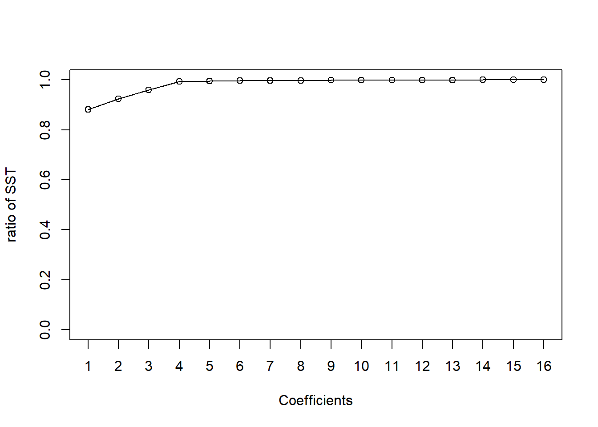

Chapter 13 \(2^k\) Factorial Experiments
We will wrap up our discussion of ANOVA-type models with \(2^k\) factorial experiments. A study of \(k\) binary factors and their effects on a response is a \(2^k\) factorial experiment. The two distinguishing features of these experiments is the fact all factors have only two levels, and the large number of crossed treatments. These result in some unique challenges, but also some simplifications.
13.1 The Model
The ANOVa-type notation becomes cumbersome for \(2^k\) factorial experiments, so we favor the regression-type notation. For example, suppose \(k=3\) so that there are 8 crossed factors. We have main effects, and interactions involving 2, 3, or all 4 factors. To denote the corresponding parameters we use \(\beta_j\) for \(j=1, \ldots, 4\) for main effects, \(\beta_{jk}\) for two-way interactions, and \(\beta_{jk\ell}\) for three-way interactions. Then, using the subscript \(i\) for the observation \(\i = 1, \ldots, n\), the model can be written
\[Y_i = \beta_0 + \beta_1X_{1i}+\beta_2X_{2i}+\beta_3 X_{3i} + \beta_{12}X_{12i} + \beta_{13}X_{13i}+\beta_{23}X_{23i} + \beta_{123}X_{123i}+\epsilon_i. \]
Note we have 8 regression coefficients corresponding to the 8 crossed treatment means.
For balanced experiments some interesting simplifications emerge. The design matrix may be easily coded using a sum-to-zero format as follows. Let response \(i\) in main effects column \(j\) be -1 if it has the first level of the factor and +1 if it has the second level. Note that interaction columns of the design are determined by multiplication of the main effects columns. Suppose for \(k=3\) we have 16 responses (2 replicates for each combination of factor levels). The first column of \(X\) is all 1’s. The second, third, and fourth columns are for main effects, adn the last four are for interactions. The design matrix is as follows:
\[\begin{matrix} 1 & -1 & -1 & -1 & 1& 1& 1& -1 \\ 1 & -1 & -1 & -1 & 1& 1& 1& -1 \\ 1 & 1 & -1 & -1 & -1& -1& 1& -1 \\ 1 & 1 & -1 & -1 & -1& -1& 1& -1 \\ 1 & 1 & 1 & -1 & 1& -1& -1& -1 \\ 1 & 1 & 1 & -1 & 1& -1& -1& -1 \\ 1 & 1 & 1 & 1 & 1& 1& 1& 1 \\ 1 & 1 & 1 & 1 & 1& 1& 1& 1 \\ 1 & -1 & 1 & -1 & -1& 1& -1& 1 \\ 1 & -1 & 1 & -1 & -1& 1& -1& 1 \\ 1 & -1 & -1 & 1 & 1& -1& -1& 1 \\ 1 & -1 & -1 & 1 & 1& -1& -1& 1 \\ 1 & -1 & 1 & 1 & -1& -1& 1& -1 \\ 1 & -1 & 1 & 1 & -1& -1& 1& -1 \\ 1 & 1 & -1 & 1 & -1& 1& -1& 1 \\ 1 & 1 & -1 & 1 & -1& 1& -1& 1 \\ \end{matrix} \]
The design matrix \(X\) has the interesting property that any two columns are orthogonal, i.e., their inner (dot) product is zero. Therefore, \(X^\top X = 16 I_{16}\) and \((X^\top X)^{-1} = \frac{1}{16}I_{16}\). And, \(\hat\beta = \frac{1}{16}X^\top Y\), making computation of the estimated regression coefficients very easy. It also means that the estimated regression coefficients are uncorrelated (because \((X^\top X)^{-1}\) has all zeroes on the off-diagonals) with equal variance \(\sigma^2 / 16\) (because the diagonal entries are equal).
13.1.1 Example: Stress Test Study
The following data records the results of a stress test measuring exercise tolerance on male and female adults who smoke (light or heavy) and who have high or low body fat:
stress <- c(24.1,29.2,24.6,20.0,21.9,17.6,14.6,15.3,12.3,16.1,9.3,10.8,17.6,18.8,23.2,14.8,10.3,11.3,14.9,20.4,12.8,10.1,14.4,6.1)
smoking <-c(rep(-1,12), rep(1,12))
fat <- c(rep(-1,6), rep(1,6),rep(-1,6), rep(1,6))
sex <- c(-1,-1,-1,1,1,1,-1,-1,-1,1,1,1,-1,-1,-1,1,1,1,-1,-1,-1,1,1,1)
data.df <- data.frame(stress = stress, smoking = as.factor(smoking), fat=as.factor(fat), sex=as.factor(sex))
X <- model.matrix(stress~smoking*fat*sex, data = data.df)
t(X)%*%X## (Intercept) smoking1 fat1 sex1 smoking1:fat1 smoking1:sex1
## (Intercept) 24 12 12 12 6 6
## smoking1 12 12 6 6 6 6
## fat1 12 6 12 6 6 3
## sex1 12 6 6 12 3 6
## smoking1:fat1 6 6 6 3 6 3
## smoking1:sex1 6 6 3 6 3 6
## fat1:sex1 6 3 6 6 3 3
## smoking1:fat1:sex1 3 3 3 3 3 3
## fat1:sex1 smoking1:fat1:sex1
## (Intercept) 6 3
## smoking1 3 3
## fat1 6 3
## sex1 6 3
## smoking1:fat1 3 3
## smoking1:sex1 3 3
## fat1:sex1 6 3
## smoking1:fat1:sex1 3 3solve(t(X)%*%X)%*%t(X)%*%matrix(stress,24,1)## [,1]
## (Intercept) 25.966667
## smoking1 -6.100000
## fat1 -11.900000
## sex1 -6.133333
## smoking1:fat1 8.066667
## smoking1:sex1 -1.600000
## fat1:sex1 4.133333
## smoking1:fat1:sex1 -2.233333lm(stress~smoking*fat*sex, data = data.df)##
## Call:
## lm(formula = stress ~ smoking * fat * sex, data = data.df)
##
## Coefficients:
## (Intercept) smoking1 fat1 sex1
## 25.967 -6.100 -11.900 -6.133
## smoking1:fat1 smoking1:sex1 fat1:sex1 smoking1:fat1:sex1
## 8.067 -1.600 4.133 -2.233summary(lm(stress~smoking*fat*sex, data = data.df))##
## Call:
## lm(formula = stress ~ smoking * fat * sex, data = data.df)
##
## Residuals:
## Min 1Q Median 3Q Max
## -4.100 -1.842 -0.950 2.217 4.367
##
## Coefficients:
## Estimate Std. Error t value Pr(>|t|)
## (Intercept) 25.967 1.764 14.720 1.01e-10 ***
## smoking1 -6.100 2.495 -2.445 0.026427 *
## fat1 -11.900 2.495 -4.770 0.000209 ***
## sex1 -6.133 2.495 -2.459 0.025730 *
## smoking1:fat1 8.067 3.528 2.286 0.036198 *
## smoking1:sex1 -1.600 3.528 -0.454 0.656274
## fat1:sex1 4.133 3.528 1.172 0.258526
## smoking1:fat1:sex1 -2.233 4.989 -0.448 0.660434
## ---
## Signif. codes: 0 '***' 0.001 '**' 0.01 '*' 0.05 '.' 0.1 ' ' 1
##
## Residual standard error: 3.055 on 16 degrees of freedom
## Multiple R-squared: 0.7976, Adjusted R-squared: 0.709
## F-statistic: 9.007 on 7 and 16 DF, p-value: 0.000152513.2 Unreplicated Factorial Experiments
Often, in practice, \(k\) is very large, so that not enough sample size is available to run a replicated experiment. When only 1 response is available for each crossed treatment (i.e. \(n = 2^k\)), the \(2^k\) factorial experiment is called “unreplicated”, and no degrees of freedom are available to estimate the variance \(\sigma^2\).
In unreplicated experiments, there are a few strategies available for recovering an estimate of \(\sigma^2\).
1. We can simply assume some interactions (usually higher-order first) are zero, and then the degrees of freedom associated with these may be put towards estimating \(\sigma^2\).
2. Graphical methods (Pareto plots).
3. Center-point replication.
The Pareto plot is a graphical display showing the ratio of effect sum of squares to total sum of squares where effect sum of squares is \(n\hat\beta_j^2\) for each of the \(2^k\) coefficients. A common technique is to use the effects with smallest sums of squares to pool to obtain a variance estimate. The resulting variance estimate is likely to be an underestimate.
Center-point replication is sometimes implementable for factors based on underlying continuous variables. For example, suppose a factor is “level of watering” of a plant with levels low and high corresponding to amount of 0.5 and 1 liters. The center-point treatment is 0.75 liters. For estimation of the variance, we have to include replicates with center-point factor levels. The “pure-error” estimate \(\hat\sigma^2\) is given by the sample variance of the responses at center-point treatment levels.
13.2.1 Example: Granola bar experiment
The following data is from Pecos Foods Company in a \(2^4\) unreplicated factorial experiment to assess the effects of processing temperature, preservative, moisture, and acidity on microbial growth in granola bars they produce for human consumption.
options(contrasts = c('contr.sum', 'contr.sum'))
response <- c(5.55,4.47,5.19,4.32,10.54,11.56,5.08,5.45,5.12,5.63,6.18,5.24,10.73,10.33,6.53,4.93)
temp <- c(1,-1,1,-1,1,-1,1,-1,1,-1,1,-1,1,-1,1,-1)
preservative <- c(1,1,-1,-1,1,1,-1,-1,1,1,-1,-1,1,1,-1,-1)
moisture <- c(1,1,1,1,-1,-1,-1,-1,1,1,1,1,-1,-1,-1,-1)
acidity <- c(1,1,1,1,1,1,1,1,-1,-1,-1,-1,-1,-1,-1,-1)
granola <- data.frame(response=response, temp=as.factor(temp), preservative = as.factor(preservative), moisture = as.factor(moisture), acidity = as.factor(acidity))
my.lm <- lm(response~preservative*moisture*acidity*temp, data = granola)
summary(my.lm)##
## Call:
## lm(formula = response ~ preservative * moisture * acidity * temp,
## data = granola)
##
## Residuals:
## ALL 16 residuals are 0: no residual degrees of freedom!
##
## Coefficients:
## Estimate Std. Error t value Pr(>|t|)
## (Intercept) 6.67812 NaN NaN NaN
## preservative1 -1.31312 NaN NaN NaN
## moisture1 1.46563 NaN NaN NaN
## acidity1 0.15813 NaN NaN NaN
## temp1 -0.18687 NaN NaN NaN
## preservative1:moisture1 -1.33313 NaN NaN NaN
## preservative1:acidity1 0.19687 NaN NaN NaN
## moisture1:acidity1 -0.17188 NaN NaN NaN
## preservative1:temp1 -0.19313 NaN NaN NaN
## moisture1:temp1 0.11063 NaN NaN NaN
## acidity1:temp1 -0.11688 NaN NaN NaN
## preservative1:moisture1:acidity1 0.04938 NaN NaN NaN
## preservative1:moisture1:temp1 -0.03812 NaN NaN NaN
## preservative1:acidity1:temp1 -0.13812 NaN NaN NaN
## moisture1:acidity1:temp1 -0.30688 NaN NaN NaN
## preservative1:moisture1:acidity1:temp1 0.06937 NaN NaN NaN
##
## Residual standard error: NaN on 0 degrees of freedom
## Multiple R-squared: 1, Adjusted R-squared: NaN
## F-statistic: NaN on 15 and 0 DF, p-value: NAOne way to estimate the variance is to assume higher-order interactions are zero. Let’s assume the three-way and four-way interactions are zero. That gives us 5 df with which to estimate the variance.
options(contrasts = c('contr.sum', 'contr.sum'))
my.lm <- lm(response~preservative*moisture + preservative*acidity + preservative*temp + moisture * acidity + moisture * temp + acidity*temp, data = granola)
summary(my.lm)##
## Call:
## lm(formula = response ~ preservative * moisture + preservative *
## acidity + preservative * temp + moisture * acidity + moisture *
## temp + acidity * temp, data = granola)
##
## Residuals:
## 1 2 3 4 5 6 7 8
## 0.50312 -0.60187 0.11063 -0.01188 -0.22687 0.32563 -0.38688 0.28812
## 9 10 11 12 13 14 15 16
## -0.42687 0.52563 -0.18688 0.08813 0.15062 -0.24938 0.46313 -0.36437
##
## Coefficients:
## Estimate Std. Error t value Pr(>|t|)
## (Intercept) 6.6781 0.1562 42.760 1.32e-07 ***
## preservative1 -1.3131 0.1562 -8.408 0.000390 ***
## moisture1 1.4656 0.1562 9.384 0.000232 ***
## acidity1 0.1581 0.1562 1.012 0.357769
## temp1 -0.1869 0.1562 -1.197 0.285114
## preservative1:moisture1 -1.3331 0.1562 -8.536 0.000363 ***
## preservative1:acidity1 0.1969 0.1562 1.261 0.263080
## preservative1:temp1 -0.1931 0.1562 -1.237 0.271156
## moisture1:acidity1 -0.1719 0.1562 -1.101 0.321245
## moisture1:temp1 0.1106 0.1562 0.708 0.510384
## acidity1:temp1 -0.1169 0.1562 -0.748 0.487933
## ---
## Signif. codes: 0 '***' 0.001 '**' 0.01 '*' 0.05 '.' 0.1 ' ' 1
##
## Residual standard error: 0.6247 on 5 degrees of freedom
## Multiple R-squared: 0.9795, Adjusted R-squared: 0.9386
## F-statistic: 23.95 on 10 and 5 DF, p-value: 0.001323Let’s construct a Pareto chart. Based on the chart, we might only include preservative, preservative:moisture, and the intercept in the model, and use the remaining 13 df to estimate the variance. But, be careful as this is a data-dependent decision.
options(contrasts = c('contr.sum', 'contr.sum'))
my.lm <- lm(response~preservative*moisture*acidity*temp, data = granola)
SST <- sum((response - mean(response))^2)
beta.ss.ratio <-(16*(my.lm$coefficients)^2)/SST
terms <- c('intercept', attributes(my.lm$terms)$term.labels)
results <- cbind(terms, as.numeric(beta.ss.ratio))
results <- results[order(results[,2], decreasing = TRUE),]
csum <- cumsum(results[,2])
plot(1:16, csum/csum[16], type = 'o', xlab = 'Coefficients', ylab = 'ratio of SST', xaxt = 'n', ylim = c(0,1))
axis(1, at = 1:16)
results[,1]## [1] "intercept" "moisture"
## [3] "preservative:moisture" "preservative"
## [5] "moisture:acidity:temp" "preservative:acidity"
## [7] "preservative:temp" "temp"
## [9] "moisture:acidity" "acidity"
## [11] "preservative:acidity:temp" "acidity:temp"
## [13] "moisture:temp" "preservative:moisture:acidity:temp"
## [15] "preservative:moisture:acidity" "preservative:moisture:temp"n <- length(granola$response)
X <- model.matrix(response~moisture+preservative + preservative*moisture, data = granola)
X.r <- X[,-2]
hat.beta <- solve(t(X.r)%*%X.r)%*%t(X.r)%*%matrix(granola$response,n,1)
hat.sigma2 <- sum((granola$response - X.r %*%hat.beta)^2)/(n-ncol(X.r))
hat.sigma2## [1] 3.029456Suppose four center-point replicates are 7.23, 7.89, 7.801, 7.39. Then, the variance estimate is the sample variance of these responses, or, \(\hat\sigma^2 = 0.101\). We may use \(\hat\sigma^2\) in t-tests of significance of the fitted regression coefficients.
options(contrasts = c('contr.sum', 'contr.sum'))
response <- c(5.55,4.47,5.19,4.32,10.54,11.56,5.08,5.45,5.12,5.63,6.18,5.24,10.73,10.33,6.53,4.93)
temp <- c(1,-1,1,-1,1,-1,1,-1,1,-1,1,-1,1,-1,1,-1)
preservative <- c(1,1,-1,-1,1,1,-1,-1,1,1,-1,-1,1,1,-1,-1)
moisture <- c(1,1,1,1,-1,-1,-1,-1,1,1,1,1,-1,-1,-1,-1)
acidity <- c(1,1,1,1,1,1,1,1,-1,-1,-1,-1,-1,-1,-1,-1)
granola <- data.frame(response=response, temp=as.factor(temp), preservative = as.factor(preservative), moisture = as.factor(moisture), acidity = as.factor(acidity))
my.lm <- lm(response~preservative*moisture*acidity*temp, data = granola)
round(2*(1-pt(abs(my.lm$coefficients)/sqrt(0.101),3)),4)## (Intercept) preservative1
## 0.0002 0.0257
## moisture1 acidity1
## 0.0192 0.6530
## temp1 preservative1:moisture1
## 0.5979 0.0247
## preservative1:acidity1 moisture1:acidity1
## 0.5795 0.6262
## preservative1:temp1 moisture1:temp1
## 0.5863 0.7508
## acidity1:temp1 preservative1:moisture1:acidity1
## 0.7375 0.8864
## preservative1:moisture1:temp1 preservative1:acidity1:temp1
## 0.9121 0.6932
## moisture1:acidity1:temp1 preservative1:moisture1:acidity1:temp1
## 0.4055 0.8412